11 14 151 Replacing Crankshaft Seal
11 14 151 Replacing crankshaft seal (N52K) by 31.12.08
Special tools required:

Necessary preliminary tasks:
- Remove transmission.
- Remove flywheel.
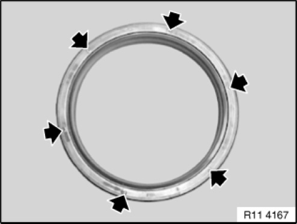
NOTE: Crankshaft radial seal has six removal openings for removal with special tool 11 9 200.
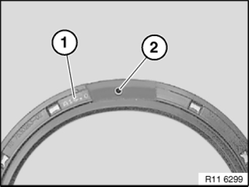
NOTE: If necessary, remove rubber coating (1) on top side of crankshaft seal and expose a removal opening (2) (see graphic).
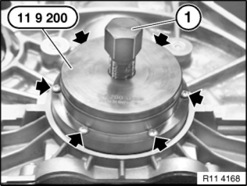
Fit special tool 11 9 200. Insert sheet metal screws into removal opening of crankshaft seal and fasten without play (do not over-tighten sheet metal screws).
Screw in spindle (1) slowly and carefully and detach crankshaft radial seal.
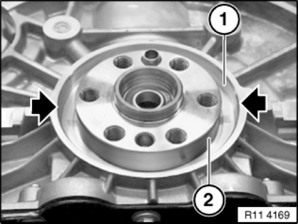
Installation note:
Clean sealing surface (1) and degrease thoroughly in area of housing partition.
Apply a light coat of oil to running surface (2) of crankshaft seal.
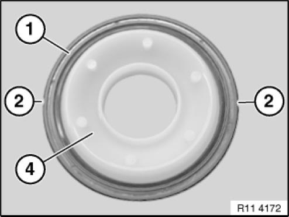
NOTE:
Support bushing (4) is contained in scope of delivery of crankshaft seal (1).
When crankshaft radial seal (1) is installed, only support bushing (4) may be used as a slip bushing.
Crankshaft radial seal (1) has a groove (2) on both left and right sides.
IMPORTANT: After installation, grooves (2) must be filled with sealing compound.

IMPORTANT:
The following text describes installation and sealing between the engine block and crankshaft radial seal.
The engine block will not be leakproof at the outside of the crankshaft radial seal if you fail to comply with the individual work steps and the work sequence.
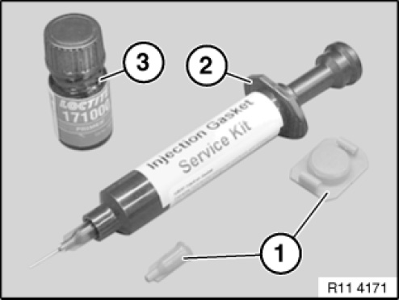
NOTE: The required parts are available from the BMW Parts Department (Electronic Parts Catalogue).
Remove sealing caps (1) from injector (2).
Screw on metering needle.
Insert piston for pressing out.
Syringe (2) contains the sealing compound Loctite, manufacturer's number 128357.
Bottle (3) contains the primer Loctite, manufacturer's number 171000.
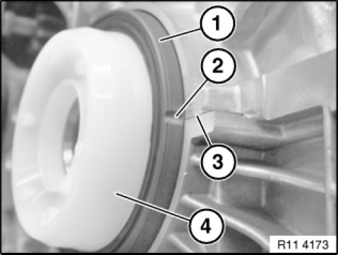
Installation note:
Fit support bushing (4) with crankshaft radial seal (1) on crankshaft.
Align groove (2) centrally to housing partition (3).
Coat both grooves (2) on crankshaft radial seal (1) with Loctite primer, manufacturer's number 171000, and expose to air for approx. one minute.
Push crankshaft radial seal (1) by hand as far as possible onto running surface.
Carefully remove support bush (4).
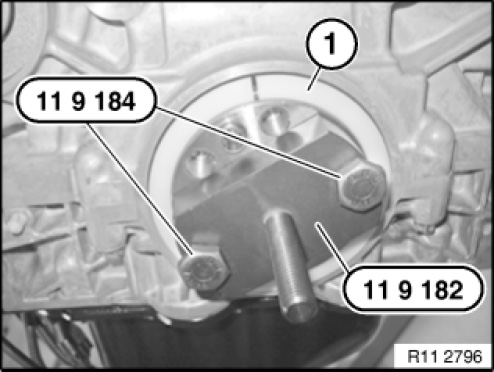
NOTE: Spacer ring (1) is supplied with radial shaft seal.
Screw special tool 11 9 182 with screws (special tool 11 9 184 ) to the crankshaft.
Fit spacer ring (1) on preassembled radial shaft seal.
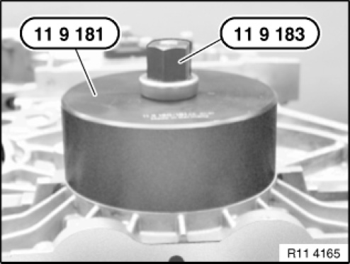
Draw in radial shaft seal and spacer ring with special tool 11 9 181 in conjunction with special tool 11 9 183.
Then remove spacer ring again.

Before filling with sealing compound:
Moisten brush with Loctite primer, manufacturer's number 171000. Insert brush as far as possible into grooves (1) on crankshaft radial seal in order to coat housing partition on engine block.
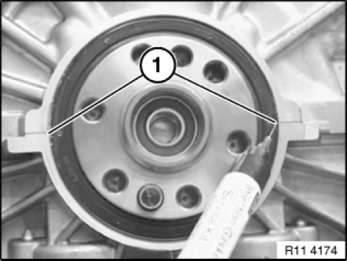
Using injector, fill both grooves (1) flush with Loctite sealing compound, manufacturer's number 128357.
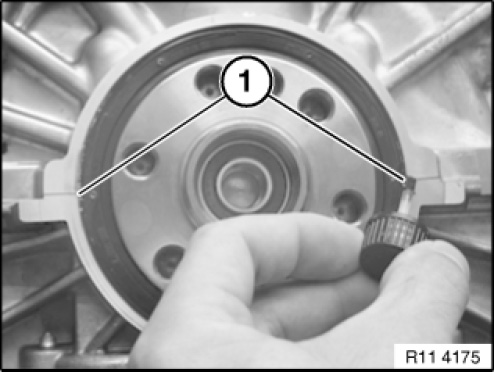
NOTE:
Loctite primer, manufacturer's number 171000, binds the Loctite sealing compound, manufacturer's number 128357, and prevents leakage.
Coat surface of sealing compound in both grooves (1) with Loctite primer, manufacturer's number 171000.

Assemble engine.